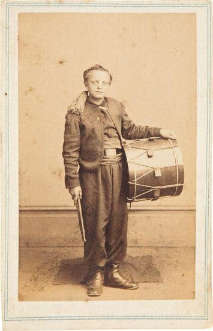
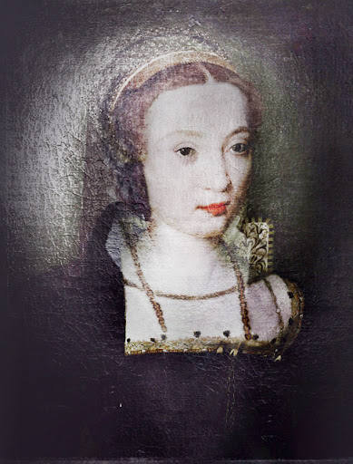

| Haunted Places | Paranormal Activities | Exorcisms & Possessions | Social Platforms | Horror Movies | Common Signs | Contact Us |
|---|
Edinburgh CastleEdinburgh, Scotland, UK |
Parched atop Castle Rock, Edinburgh Castle has stood a sentinel of Scottish history for over 900 years. Its origin trace back to at leastthe 12th century, when it emerged as a royal stronghold under King David I. Built on a volcanic crag, the castle's strategic position made it a focal point for power, defense, and national identity, shaping Scotland's story through centuries of conflict, royalty, and resillience.
Edinburgh Castle looms over Scotland’s capital city, its outer walls seeming to merge with the sheer cliff face which has made the castle almost impregnable for over a thousand years. Built on a plug of volcanic rock, Edinburgh is one of the oldest fortifications in Europe. It has withstood wars and outbreaks of plague. Indeed, no other building in Britain can claim to have been besieged as many times as Edinburgh Castle. It has been a royal residence, a barracks, a prison and home to the most powerful symbols of Scotland’s sovereignty. Dark happenings within its walls have inspired scenes out of Game of Thrones. Witches have been burnt beneath its shadow. Yet it seems that neither rock nor wall can restrain the restless spirits which walk within its halls.
Ghosts of Edinburgh Castle
Known as the most haunted place in Scotland, Edinburgh Castle has had reports of ghosts and paranormal activity going back hundreds of years.
There have been thousands of claims by visitors and staff members, including apparitions, being touched and pulled, the feeling of being watched, shadowy figures, mists, green lights, sudden temperature drops, and people suddenly becoming over-run by emotions.
The most common experience is the sighting of apparitions. The sighting of an older man in a leather apron has been seen, as well as a little headless drummer boy and the Grey Lady (Janet Douglas, Lady of Glamis).
Other reports include a poltergeist in the castle dungeon and a regular sighting of ghost dogs in the castle’s dog cemetery, the most notable being ‘Greyfriars Bobby’.
The Little Drummer Boy
The legend of the little drummer boy goes back to 1650 when his headless ghost was spotted playing an old Scottish war tune along the battlements. His spirit appeared when Oliver Cromwell’s men were laying siege to the castle, therefore giving credence to the belief the boy appears when the castle is under attack.
Nobody knows who this apparition could be, but anyone living today hasn’t witnessed this phenomenon as Edinburgh Castle hasn’t been under threat since the Jacobite uprising in 1745.

The Piper Ghost
The sounds of a phantom bagpiper can be heard underneath the Royal Mile.
Several centuries ago, a secret network of tunnels was discovered underneath Royal Mile that went from the castle towards Holyrood Place. To find out where they lead, the brave souls of the time sent a young piper boy to search the tunnels for them.
He set about playing his bagpipes, and the people above followed the sound. The sound was clear for a time until the bagpipes stopped abruptly near Tron Kirk on Royal Mile.
Several search parties were sent down to locate the boy, but the poor piper was nowhere to be found. Disturbed by the boy’s disappearance, the city council ordered that the tunnels be sealed, never to be reopened.
Since his disappearance, the little boy playing his bagpipes can be heard from underneath the Royal Mile. Visitors still report this phenomenon to this day.
The Grey Lady - Janet Douglas, Lady of Glamis
The story of Janet is a tragic one. Caught in the middle of a family feud, she would ultimately be executed by King James V of Scotland.
She was brother to Archibald Douglas, 6th Earl of Angus, who was the King’s stepfather and very much hated by James, and with good reason, he imprisoned him as a young boy.
James held a grudge against Archibald and all the Douglas family, and in 1537 Janet was convicted of trying to poison James and witchcraft. However, such evidence was proving difficult to obtain, so James had her servants and friends tortured until they gave him the “evidence” he required.
Janet was subsequently convicted and burned at the stake outside Edinburgh Castle on 17 July 1537, with her young son forced to watch.
Shortly after her gruesome death, people witnessed the Grey Lady walking throughout the castle, weeping.

History of Edinburgh Castle
There has been a defensive fort on this site since the Iron Age. In 638 AD, it served as a defensive stronghold for the Celtic speaking natives when the Germanic forces attacked and claimed the settlement. The Germanic’s changed its name from Din Eidyn to Edinburgh for the first time. Then in 1296, it was overthrown by Edward I of the Scots and then again by Robert Bruce, who called for it to be burnt to the ground.
It was rebuilt and became home to Mary Queen of Scots until she was exiled to England, after which the castle was then partially destroyed by the English and was then rebuilt again in 1574. James VII of Scotland lost his throne to William of Orange in 1688, and the Jacobite uprisings aside in the 18th Century it has remained undamaged since.
Beyond The Veil |
||
|---|---|---|
|
Explore the unexplained and discover mysteries that challenge the ordinary. |
||
|
||
|
|